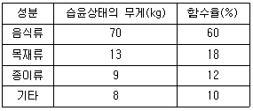
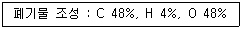
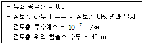
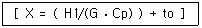
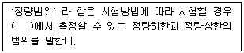
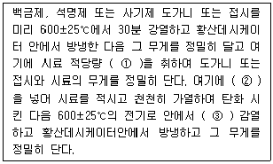
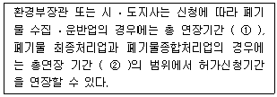

폐기물처리기사 (2010-09-05 기출문제)
1과목: 폐기물 개론
1. 수분이 96%인 슬러지를 수분 60%로 탈수했을 때, 탈수 후 슬러지의 체적은? (단, 탈수 전 슬러지의 체적은 500m3)(문제 복원 오류로 보기가 모두 같습니다. 정확한 보기 내용을 아시는분 께서는 오류신고를 통하여 내용 작성 부탁 드립니다. 정답은 2번 입니다.)
- 30m3
- 30m3
- 30m3
- 30m3
(정답률: 알수없음)

2. 최소 크기가 10cm인 폐기물을 2cm로 파쇄하고자 할 때 Kick's 법칙에 의한 소요 동력은 동일 폐기물을 4cm로 파쇄할 때 소요되는 동력의 몇 배 인가? (단, n=1로 가정한다.)
- 1.38배
- 1.52배
- 1.76배
- 1.92배
(정답률: 알수없음)
3. 어느 도시 쓰레기 시료 100kg의 습윤조건 무게 및 향수를 측정결과가 다음과 같을 때, 이 시료의 건조 중량은 얼마인가?

- 39kg
- 46kg
- 54kg
- 62kg
(정답률: 알수없음)
4. 새로운 쓰레기 수집 수송 방법인 pipe line 수송방법의 장, 단점으로 옳지 않은 것은?
- 사고발생시 시스템 전체가 마비되며 대체 시스템으로의 전환이 필요하다.
- 조대(粗大)쓰레기의 파쇄, 압축 등의 전처리가 필요 없다.
- 쓰레기 발생밀도가 높은 지역에서 현실성이있다
- 가설 후에 경로변경이 곤란하고 설치비가 높다.
(정답률: 알수없음)
5. 인구 130,000명의 도시에서 28,470ton/year의 쓰레기가 발생하였다. 이도시의 1인당 1일 쓰레기 발생량은?
- 0.6 kg/인 ㆍ 일
- 0.8 kg/인 ㆍ 일
- 1.0 kg/인 ㆍ 일
- 1.2 kg/인 ㆍ 일
(정답률: 알수없음)
6. 어느 도시의 쓰레기 발생량이 3배로 증가하였으나 쓰레기 수거노동력(MHT)은 그대로 유지시키고자 한다. 수거시간을 50% 증가시키는 경우 수거인원은 몇 배로 증가 되어야 하는가?
- 1.5배
- 2배
- 2.5배
- 3배
(정답률: 알수없음)
7. 슬러지를 처리하기 위하여 생슬러지를 분석한 결과 수분은 90%, 고형물 중 휘발성 고형물은 70%, 휘발성 고형물의 비중은 1.1, 무기성 고형물의 비중은 2.2였다. 생슬러지의 비중은? (단, 무기성 고형물 +휘발성 고형물 = 총 고형물)
- 1.011
- 1.018
- 1.023
- 1.028
(정답률: 알수없음)
8. 폐기물의 수거노선 설정시 고려해야 할 내용으로 옳지 않은 것은?
- 언덕지역에서는 언덕의 꼭대기에서부터 시작하여 적재하면서 차량이 아래로 진행 하도록 한다.
- U자 회전을 피하여 수거한다.
- 아주 많은 양의 쓰레기가 발생되는 발생원은 하루 중 가장 나중에 수거한다.
- 가능한 한 시계방향으로 수거노선을 정한다.
(정답률: 알수없음)
9. 인구 10만명이고 1인 1일 쓰레기 배출량이 0.88kg 이며, 쓰레기의 밀도 250kg/m3 이라고 하면 적재용량 6.0m3 인 차량이 하루에 몇 대 필요한가? (단, 기타 조건은 고려하지 않음)
- 43대
- 58대
- 69대
- 72대
(정답률: 알수없음)
10. 다음 그림이 나타내는 선별방법은?
- Secators
- Jigs
- Stoners
- Separators
(정답률: 알수없음)
11. 0.5ton/m3의 밀도를 갖는 쓰레기 시료를 압축하여 밀도를 0.75ton/m3으로 증가시켰다. 이 때의 부피 감소율은?
- 24%
- 33%
- 42%
- 50%
(정답률: 알수없음)
12. 쓰레기 발생량 예측모델 중 모든 인자를 시간에 대한 함수로 나타낸 후 시간에 대한 함수로 표현된 각 영향인자들간의 상관관계를 수식화하는 방법은?
- 동적모사모델
- 시적인자모델
- 다중회귀모델
- 회귀인자모델
(정답률: 알수없음)
13. 다음 중에서 쓰레기 발생량 조사방법이 아닌 것은?
- 적재차량 계수분석법
- 직접 계근법
- 물질수지법
- 경향법
(정답률: 알수없음)
14. 적환장의 위치선점시 고려할 점이 아닌 것은?
- 수거지역의 무게중심에 가까운 곳
- 환경피해가 적은 외곽지역
- 주요 간선도로에 근접한 곳
- 설치 및 작업조작이 경제적인 곳
(정답률: 알수없음)
15. 퇴비화 하기 위해 함수율 97%인 분뇨와 함수율 30%인 쓰레기를 무게비 1:3으로 혼합했을 때의 함수율은?
- 30%
- 47%
- 52%
- 57%
(정답률: 알수없음)
16. 6,000,000ton/year의 쓰레기 수거에 4,500명의 인부가 종사한다면 MHT값은? (단, 수거인부의 1일 작업시간은 8시간이고, 1년 작업 일수는 300일이다.)
- 1.8
- 2.4
- 3.2
- 3.6
(정답률: 알수없음)
17. 슬러시 수분 중 가장 용이하게 분리할 수 있는 수분의 형태로 옳은 것은?
- 모관결함수
- 세포수
- 표면부착수
- 내부수
(정답률: 알수없음)
18. 수분함량이 35%인 쓰레기를 건조시켜 수분 함량 15%로 감소시키면 건조쓰레기 중량은 처음 중량의 몇 %가 되는가? (단, 비중은 1.0으로 함)
- 76.5%
- 77.9%
- 79.3%
- 81.4%
(정답률: 알수없음)
19. 하루 폐기물 발생량(밀도 0.85t/m3)이 500m3인 어느 도시에서 적재용량이 10톤인 트럭으로 폐기물을 운반하고자 한다면 소요 차량대수는? (단, 기타 조건은 고려하지 않음)
- 41
- 42
- 43
- 44
(정답률: 알수없음)
20. 직경이 1.0m인 트롬엘 스크린의 최적 속도는?
- 약 27rpm
- 약 23rpm
- 약 19rpm
- 약 11rpm
(정답률: 알수없음)
2과목: 폐기물 처리 기술
21. 시멘트 고형화법 중 자가시멘트법에 대한 설명으로 옳지 않은 것은?
- 혼합율은 높고 중금속 저지에 효과적이다.
- 탈수 등 전처리가 필요 없다.
- 장치비가 크고 보조에너지가 필요 하다.
- 연소가스 탈황시 발생된 슬러지처리에사용된다
(정답률: 알수없음)
22. 5000m3/일 하수를 처리하는 처리장의 1차 침전지에서 침전된 슬러지 내 고형물이 0.2톤/일, 2차 침전지에서 0.1톤/일 제거되며, 각 슬러지의 함수율은 98%, 99.5%이다. 침전지에서 발생한 슬러지를 정체시간 5일로 하여 농축시키려면 농축조의 크기는? (단, 슬러지의 비중은 1.0으로 가정함)
- 280m3
- 260m3
- 180m3
- 150m3
(정답률: 알수없음)
23. 함수율 98%인 잉여슬러지 100m3가 농축되어 함수율이 95%로 되었을 때 농축 잉여슬러지의 부피(m3)는? (단, 슬러지 비중은 1.0)
- 40
- 45
- 50
- 55
(정답률: 알수없음)
24. 슬러지 개량 방법 중 세척에 관한 설명으로 옳지 않은 것은?
- 소화 슬러지를 물과 혼합시킨 후 슬러지를 재 참전시키는 방법이다.
- 슬러지를 토양개량제로 사용하는 경우에 활용된다.
- 알칼리성 슬러지를 세척함으로써 슬러지 탈수에 이용되는 응집제의 양을 감소시킬 수 있다.
- 소화 슬러지내의 가스방울이 없어지므로 부력을 제거하여 농축이 잘 되게 한다.
(정답률: 알수없음)
25. 합성차수막인 CSPE에 관한 설명으로 옳지 않은것은?
- 미생물에 강하다.
- 집합이 용이하다.
- 산과 알칼리에 약하다.
- 기름, 탄화수소 및 용매류에 약하다.
(정답률: 알수없음)
26. 쓰레기 전화 연류(RCF)에 대한 설명으로 옳지 않은 것은?
- 수분함량이 증가하면 부패하여 연료로서의 가치를 상실한다.
- PVC등이 함유되면 연소시 배기가스 처리에 유의해야 한다.
- 쓰레기 연료로 전화하기 위한 전처리에 동력 및 투자비가 적게 소요된다.
- 배합 조성율이 균일하여야 한다.
(정답률: 알수없음)
27. 함수율이 95%이고 고형물 중 유기물이 60%인 하수슬러지 200m3/일을 소화시켜 유기물의 2/3가 분해되고 함수율 85%인 소화슬러지를 얻었다. 소화슬러지의 양은? (단, 슬러지 비중은 1.0)
- 20m3/일
- 30m3/일
- 40m3/일
- 50m3/일
(정답률: 알수없음)
28. 어떤 폐기물의 조성이 다음과 같다면 이 쓰레기 1kg이 매립지내에서 혐기성 가수 분해될 때 발생되는 이론적 가스의 양은?

- 2.0 Nm3
- 1.7 Nm3
- 1.3 Nm3
- 0.9 Nm3
(정답률: 알수없음)
29. 폐기물처리의 고화처리방법 중 피막형성법의 장점으로 옳은 것은?
- 화재 위험성이 없다.
- 혼합율이 낮다.
- 에너지 소요가 적다.
- 피막형성을 위한 수지값이 저렴하다.
(정답률: 알수없음)
30. 수분함량이 90%인 슬러지를 수분함량 50%로 낮추기 위해 톱밥을 첨가하였다면 슬러지 톤당 소요되는 톱밥의 양(kg)은? (단, 비중 1.0 , 톱밥의 수분함량은 20%라 가정함)
- 약 1334
- 약 1845
- 약 2372
- 약 2683
(정답률: 알수없음)
31. 진공 여과 탈수기로 투입되는 슬러지량이 120m3/hr 이고 슬러지 함수율 95%, 여과율(고형물기준)이 100kg/m2-hr의 조건을 가질 때 여과 면적은? (단, 슬러지 비중은 1.0 기준)
- 40m2
- 50m2
- 60m2
- 70m2
(정답률: 알수없음)
32. 1차 반응속도에서 반감기(초기농도가 50% 줄어드는 시간)가 1시간이라면 초기농도의 95%가 줄어드는데 걸리는 시간은 얼마인가?
- 4.3 시간
- 5.2 시간
- 6.1 시간
- 7.1 시간
(정답률: 알수없음)
33. 토양증기추출법(SVE) 시스템의 장단점으로 옳지 않은 것은?
- 생물학적 처리효율을 높여준다.
- 오염물질의 독성은 변화가 없다.
- 총 처리시간을 예측하기가 용이하다.
- 추출된 시체는 대기오염방지를 위해 후처리가 필요하다.
(정답률: 알수없음)
34. 차수막 재료로서 점토의 조건으로 가장 부적합한 것은?
- 투수계수 : 10-3cm/sec 미만
- 소성지수 : 10% 이상 30% 미만
- 자갈함유량 10% 미만
- 액성한계 10% 이상 20% 미만
(정답률: 알수없음)
35. 합성차수막의 crystallinity가 증가하면 나타나는 성질로 옳지 않은 것은?
- 화학물질에 대한 저항성이 커짐
- 충격에 약해짐
- 열에 대한 저항성 감소
- 투수계수가 감소됨
(정답률: 알수없음)
36. 1일 폐기물 배출량이 350t인 도시에서 도량(Trench)법으로 매립지를 선정하려 한다. 쓰레기의 압축이 30%가 가능하다면 1일 필요한 면적은? (단, 발생된 쓰레기의 밀도는 250kg/m3, 매립지의 깊이는 2.5m)
- 약 100m2
- 약 200m2
- 약 300m2
- 약 400m2
(정답률: 알수없음)
37. 소화조로 유입되는 슬러지의 양이 350 m3/일이고 고형물과 고형물 중 VS함량이 각각 3.5%와 70% 이다. 소화조의 VS소화율은 60%이고, 소화조의 가스발생량은 0.75m3/kg-VS일 때 일일 생성되는 가스량은? (단, VS의 비중은 1.0 이다.)
- 약 3430m3/일
- 약 3859m3/일
- 약 4145m3/일
- 약 4578m3/일
(정답률: 알수없음)
38. 차수설비에는 표면차수막과 면직차수막으로 구분 되어지는데, 면적차수막에 대한 일반적인 설명으로 옳지 않은 것은?
- 지중에 수평방향의 차수층이 존재하는 경우에 채용한다.
- 지하수 진배수 시설이 필요하다.
- 지하에 매설하기 때문에 차수성 확인이 어렵다.
- 차수막 단위면적당 공사비가 비싸지만 총공사비는 싸다.
(정답률: 알수없음)
39. 매립장에서 침출된 침출수가 다음과 같은 점토로 이루어진 90cm의 차수층을 통과하는데 걸리는 시간을 얼마인가?

- 6.9년
- 7.9년
- 8.9년
- 9.9년
(정답률: 알수없음)
40. 고형물의 함량이 80kg/m3인 농축슬러지를 18m3/hr 유량으로 탈수시키려한다. 고형물 중량에 대해 25%의 소석회를 넣으면 함수율 70%의 탈수 cake이 얻어진다고 할 때 농축 슬러지로부터 얻어지는 탈수 cake의 양은? (단, 하루 운전시간은 24시간, cake의 비중은 1.0)
- 122 t/day
- 144 t/day
- 166 t/day
- 188 t/day
(정답률: 알수없음)
3과목: 폐기물 소각 및 열회수
41. 옥탄(C8H13)이 완전 연소할 때 AFR은? (단, kg mol/kg mol)
- 59.5
- 48.5
- 29.5
- 15.1
(정답률: 알수없음)
42. 매시간 4ton의 폐유를 소각하는 소각로에서 발생하는 황산화물을 접촉산화법으로 탈황하고 부산물로 60%의 황산을 회수한다면 회수되는 부산물량(kg/hr)은? (단, 폐유 중 황성분 3%, 탈황율 95%라 가정함)
- 약 428
- 약 482
- 약 538
- 약 582
(정답률: 알수없음)
43. 소각방식 중 로타리킬튼식 소각로의 장점에 대한 설명으로 옳지 않은 것은?
- 과잉공기량을 최소화 할 수 있어 분진발생량이 적다.
- 고형 폐기물에 높은 난류도와 공기에 대한 접촉을 크게 할 수 있다.
- 용융상태의 물질에 의하여 방해받지 않는다.
- 대체로 예열, 혼합, 파쇄 등 전처리 없이 주임 가능하다.
(정답률: 알수없음)
44. 소각능이 830 kg/m2 ㆍ hr인 스토커형 소각로에서 1일 100톤의 쓰레기를 소각시킨다. 이 소각로의 화격자 면적은? (단, 소각로의 연속 가동한다.)
- 약 5 m2
- 약 10 m2
- 약 15 m2
- 약 20 m2
(정답률: 알수없음)
45. 열교환기에 관한 설명으로 옳지 않은 것은?
- 과열기 : 보일러에서 발생하는 포화증기에 다량의 수분이 함유되어 있어 이것에 열을 과하게 가열하게 수분을 제거하고 과열도가 높은 증기를 얻기 위해 설치한다.
- 재열기 : 가열기와 같은 구조로 되어 있으며 설치위치는 대개 과열기의 중간 또는 뒤쪽에 배치한다.
- 절탄기 : 급수 예열에 의해 보일러수와의 온도차가 감소하므로 보일러 드럼에 발생하는 열응력에 경감된다.
- 이코노마이저(Econamizer) : 보일러 전열면에 설치하여 급수의 여열로 연소 가스를 예열하여 보일러의 효율을 높이는 장치이다.
(정답률: 알수없음)
46. 다단로에 대한 설명으로 옳지 않은 것은?
- 신속한 온도반응으로 보조연료사용 조절이 용이하다.
- 다량의 수분이 증발되므로 수분함량이 높은 폐기물의 연소가 가능하다.
- 물리, 화학적으로 성분이 다른 각종 폐기물을 처리할 수 있다.
- 체류시간이 길어 휘발성이 적은 폐기물 연소에 유리하다.
(정답률: 알수없음)
47. 소각공정에서 발생하는 다이옥신에 관한 설명으로 옳지 않은 것은?
- 쓰레기 중 PVC 또는 플라스틱류 등을 포함하고 있는 합성물질을 연소시킬 때 발생한다.
- 연소시 발생하는 미연분의 양과 비산재의 양을 줄여 다이옥신을 체감할 수 있다.
- 다이옥신 재형성 온도구역을 설정하여 재합성을 유도함으로써 제거할 수 있다.
- 활성탄과 백필터을 적용하여 다이옥신을 제거하는 설비가 많이 이용된다.
(정답률: 알수없음)
48. 폐기물 소각에 필요한 이론공기량이 1.49Nm3/kg이고 공기비는 1.2 이었다. 하루에 폐기물 소각량이 200ton일 때 실제 필요한 공기량(Nm3/kg)은? (단, 24시간 연속 소각 기준)
- 약 15000
- 약 20000
- 약 25000
- 약 30000
(정답률: 알수없음)
49. 탄소 10kg을 완전 연소하는데 소요되는 이론 공기량은 몇 Nm3인가?
- 72
- 89
- 96
- 104
(정답률: 알수없음)
50. 연소장치에서 공기비가 큰 경우에 나타나는 현상과 가장 거리가 먼 것은?
- 연소실에서 연소온도가 낮아진다.
- 배기가스 중 질소산화물량이 증가한다.
- 불완전연소로 일산화탄소량이 증가한다.
- 통풍력이 강하여 배기가스에 의한 열손실이 크다.
(정답률: 알수없음)
51. 밀도가 500Kg/m3인 도시형 쓰레기 50ton을 소각한 결과 밀도가 1500Kg/m3인 소각재가 15ton 발생 되었다면 소각시 용량 감소율(%)은?
- 80
- 85
- 90
- 95
(정답률: 알수없음)
52. 다음 공식은 무엇을 구하는 식인가? (단, H1 : 연료의 저위발열량, G : 이론 연소가스량, to : 실제온도, Cp : 연소가스의 정압비열)

- 이론 연소온도
- 이론 착화온도
- 이론 고위발열량
- 이론 인화점온도
(정답률: 알수없음)
53. CH4 65%, C2H8 20%, C3H8 15%로 구성된 기제연료 5 Sm3을 연소할 경우 필요한 이론공기량(Sm3)은?
- 45.4
- 55.5
- 65.5
- 75.5
(정답률: 알수없음)
54. 처리가스유량이 500m3/hr 이고 여과포의 유효면적이 5m2일 때 여과집진장치의 겉보기여과속도(cm/s)는?
- 1.8cm/s
- 2.8cm/s
- 3.8cm/s
- 4.8cm/s
(정답률: 알수없음)
55. 소각 연소가스 중 질소산화물(NOx)을 제거하는 방법이 아닌 것은?
- 촉매(TIO2,V2O5)을 이용하여 제거하는 방법
- 촉매를 이용하지 않고 암모니아수 또는 요소수를 주입하여 제거하는 방법
- 연소용 공기의 예열온도를 높여 제거하는 방법
- 연소가스를 소각로로 재순환시키는 방법
(정답률: 알수없음)
56. 함수율 70%인 슬러지 케이크 10ton을 소각할 때 소각재 발생량(kg)은? (단, 케이크 건조중량당 무기성분 20%, 유기 성분중 연소율 90%, 소각에 의한 무기물 손실은 없음)
- 740
- 840
- 940
- 1040
(정답률: 알수없음)
57. 도시쓰레기 성분중 수소 3kg이 완전연소 되었을 때 필요로 한 이론적 산소 요구량과 연소생성물(combustion product)인 수분의 양은 각각 얼마인가? (단, 산소(02), 수분(H2O) 순서)
- 20kg, 23kg
- 22kg, 25kg
- 24kg, 27kg
- 26kg, 29kg
(정답률: 알수없음)
58. 발열량이 8000kcal/kg인 폐기물 10ton/day을 소각처리 할 경우 소각로의 용적(m3)은? (단, 소각로의 일일 가동시간은 8시간으로 가정하고, 소각로 열부하율은 6250kcal/m3·hr이다.)
- 1600
- 1700
- 1800
- 1900
(정답률: 알수없음)
59. 열분해에 대한 설명으로 옳지 않은 것은?
- 열분해공정은 산소가 없는(무산소)상태에서 발열반응을 한다.
- 열분해공정으로부터 아세트산, 아세톤, 메탄올 등과 같은 액체상물질을 얻을 수 있다.
- 열분해 온도가 증가할수록 발생가스 내 CO2 구성비는 감소한다.
- 열분해 장치는 고정상, d동상, 부유상태 등의 장치로 구분되어질 수 있다.
(정답률: 알수없음)
60. 염화수소를 함유하는 배기가스를 20kg의 수산화나트륨으로 처리하였다. 만약 수산화나트륨 93%가 반응하였다면 제거된 염화수소의 양은? (단, Na = 23, Cl = 35.5)
- 13kg
- 17kg
- 21kg
- 24kg
(정답률: 알수없음)
4과목: 폐기물 공정시험기준(방법)
61. 원자흡광광도법에서 사용되는 불꽃을 만들기 위한 가스조합 중 불꽃 온도는 낮고 일부 원소에 대하여 높은 감도를 나타내는 것은?
- 수소-공기
- 프로판-공기
- 아세틸렌-공기
- 아세틸렌-질소
(정답률: 알수없음)
62. 총칙에서 규정하고 있는 사항 중 옳은 것은?
- '약'이라 함은 기재된 양에 대하여 ±5% 이상의 차이가 있어서는 안 된다.
- '감압 또는 진공'이라 함은 따로 규정이 없는 한 15mmH20 이하를 말한다.
- '정확히 단다'라 함은 규정된 양의 검체를 취하여 분석용 저울로 0.1mg 까지 다는 것을 말한다.
- '정확히 취하여'라 함은 규정한 양의 검체 또는 시액을 뷰렛으로 취하는 것을 말한다.
(정답률: 알수없음)
63. 원자흡광광도법을 적용하여 수은을 분석할 때 시료 중 벤젠, 아세톤 등 휘발성 유기물질이 함유되어 253.7nm에서 흡광도를 나타낸다면 이때 조치 방법으로 옳은 것은?
- 염화제일주석을 넣어 수은을 환원시킨 후 헥산으로 추출 정제한 다음 시험한다.
- 염산으로 완전 산화시키고 통기하여 휘발, 제거한 다음 시험한다.
- 과망간산칼륨 분해 후 헥산으로 이들 물질을 추출 분리한 다음 시험한다.
- 염산히드록실 아민용액을 과잉으로 넣은 후 공기로 통기하여 제거한 다음 시험한다.
(정답률: 알수없음)
64. 흡광광도법에 의해 구리를 측정할 때 알칼리성에서 디에틸디티오카르바인산나트륨과 반응하여 생성되는 킬레이트 화합물의 색으로 옳은 것은?
- 적자색
- 청색
- 황갈색
- 적색
(정답률: 알수없음)
65. 흡광광도계 측정부에서 군적의 파장범위에서의 광전측광에 사용되는 것은?
- 광전도셀
- 광전관
- 광전자증배관
- 광전지
(정답률: 알수없음)
66. 취급 또는 저장하는 동안에 이물이 들어가거나 또는 내용물이 손실되지 아니하도록 보호하는 용기는?
- 밀폐용기
- 기밀용기
- 밀봉용기
- 채광용기
(정답률: 알수없음)
67. 분석하고자 하는 대상폐기물의 양이 5톤이상 30톤미만인 경우에 채취하는 시료의 최소수는?
- 10개
- 12개
- 14개
- 16개
(정답률: 알수없음)
68. 가스크로마토그래피법에 의한 분석과정에 대한 설명으로 옳지 않은 것은? (단, 용출용액 종의 기준)
- 검출기는 전자포획 검출기(ECD) 또는 이와 동등한 성능을 가진 것을 사용한다.
- 길이 30m 이상, 안지름 0.25~0.53mm의 DB-1, DB-5, DB-608 캐밀러리 칼럼 또는 이와 동등이상의 분리놓을 가진 것을 사용한다.
- 농축기는 구데르나다니쉬 농축기나 회전증발농축기를 사용한다.
- PCB3 사염화탄소로 추출하며 알루미나칼럼을 통과시켜 점제한다.
(정답률: 알수없음)
69. 시료 용기에 기재할 사항과 가장 거리가 먼 것은?
- 채취기구, 대상 폐기물 분석항목
- 시료번호, 채취책임자 이름
- 채취방법, 폐기물의 명칭
- 채취기간 및 일기, 시료의 양
(정답률: 알수없음)
70. 흡광광도계에서 광원으로부터 나오는 빛의 30%를 흡수하였다면 흡광도는?
- 0.273
- 0.245
- 0.155
- 0.124
(정답률: 알수없음)
71. 원자흡광광도법에 의한 납(Pb) 시험에 관한 내용으로 옳지 않은 것은?
- 정량범위는 283.3nm에서 0.⑤~1.0mg/L이다.
- 램프는 납 중공용극램프를 사용한다.
- 사용 가스는 아세틸렌-공기이다.
- 유효측정농도는 0.04mg/L 이상이다.
(정답률: 알수없음)
72. 함수율이 90%인 슬러지를 용출 시험하여 납의 농도를 측정하니 0.02mg/L로 나타났다. 수분함량을 보정한 용출시험 결과치는?
- 0.03
- 0.⑤
- 0.07
- 0.09
(정답률: 알수없음)
73. 다음의 내용 중 비스를 측광광도법으로 측정할 때 옳지 않은 것은?
- 시료 중의 비스를 아연을 넣어 3가 비소로 환원시킨다.
- 적자색의 흡광도를 530nm에서 측정한다.
- 정량범위는 0.002~0.01mg/L 이다.
- 유효측정 농도는 0.04mg/L 이상으로 한다.
(정답률: 알수없음)
74. pH 측정에 관한 설명으로 옳지 않은 것은?
- pH는 수소이온농도를 그 역수의 상용대수로서 나타내는 값이다.
- pH 표준용액 조제에 사용하는 물은 정제수를 증류한 후 그 유출용액에 무수황산나트륨 흡수관을 부착하여 사용한다.
- pH 미터의 지시부에는 비대칭 전위조절용 곡지 및 온도 보상용 꼭지가 있다.
- pH 미터는 한 종류의 pH 표준용액에 대하여 검출부를 물로 잘 씻은 다음 5회 되풀이하여 pH를 측정하였을 때 그 재현성이 ±0.⑤ 이내의 것을 쓴다.
(정답률: 알수없음)
75. 흡광광도법에 의한 크롬 분석에 관한 설명으로 옳지 않은 것은?
- 과망간산칼륨으로 크롬이온 전체를 6가 크롬으로 산화시킨다.
- 산성에서 디페닐카르바지트와 반응하여 생성되는 적자색의 적화합물의 흡광도를 540nm에서 측정한다.
- 시료 중 철이 공존하는 경우에는 5% 황산알루미늄 1~2mL를 투입하여 침전 제거한다.
- 정량범위는 0.002~0.⑤mg 범위이다.
(정답률: 알수없음)
76. ( )안에 옳은 내용은?

- 유효측정농도 5% 이하
- 유효측정농도 10% 이하
- 표준 편차율 5% 이하
- 표준 편차율 10% 이하
(정답률: 알수없음)
77. 시료의 전처리 방법 중 마이크로파(Microwave)에 의한 유기물 분해에 관한 내용으로 옳지 않는것은?
- 마이크로파 영역에서 극성분자나 이온이 쌍극자모엔트(Diploe moment)와 이온전도(Ionic conductance)를 일으켜 온도가 상승하는 원리를 이용하여 시로를 가열하는 방법이다.
- 시료의 분해에 이용되는 대부분의 마이크로파 장치는 2.2cm 파장역 100~150Mhz 범위의 주파수를 갖는다.
- 마이크로파는 전자파 에너지의 일종으로서 빛의 속도로 이동하는 교류와 자기장으로 구성되어 있다.
- 가열속도가 빠르고 재현성이 좋으며 폐유 등 유기물이 다량 함유된 시료의 전처리에 이용된다.
(정답률: 알수없음)
78. 기름성분을 측정하기 위한 노말핵산 추출시험 방법에서 pH를 4 이하로 조절하는 시약으로 가장 옳은 것은? (단, 노말핵산 추루물질의 함량은 적절함)
- 염산(1+1)
- 질산(1+1)
- 염산(1+4)
- 질산(1+4)
(정답률: 알수없음)
79. 다음은 감열감량 및 유기물함량 분석에 관한 내용이다. ( )안에 옳은 것은?

- ① 10g 이상, ② 15% 질산암모늄용액 ③ 2시간
- ① 20g 이상, ② 15% 질산암모늄용액 ③ 2시간
- ① 10g 이상, ② 25% 질산암모늄용액 ③ 3시간
- ① 20g 이상, ② 25% 질산암모늄용액 ③ 3시간
(정답률: 알수없음)
80. 가스크로마토그래피의 검출기 중 인 또는 유황 화합물을 선택적으로 검출할 수 있는 것으로 운반가스와 조연가스의 혼합부, 수소공급구, 연소 노즐, 광학필터, 광전자증배관 및 전원 등으로 구성된 것은?
- TCD(Thermal Conductivity Detector)
- FID(Flame Ionization Detector)
- FPD(Flame Photometrlc Detector)
- FTD(Flame Thermionic Detector)
(정답률: 알수없음)
5과목: 폐기물 관계 법규
81. 폐기물의 재활용시 에너지의 회수기준으로 옳지 않은 것은?
- 에너지의 회수효율(회수에너지 총량을 투입 에너지 총량으로 나눈 비율)이 75% 이상일 것
- 다른 물질과 혼합하지 아니하고 해당 폐기물의 저위발열량이 3000kcal/kg 이상일 것
- 회수열의 50%이상을 열원으로 이용하거나 다른 사람에게 공급할 것
- 환경부장관이 정하여 고시하는 경우에는 폐기물의 30%이상을 원료나 재료로 재활용하고 그 나머지 중에서 에너지의 회수에 이용할 것
(정답률: 알수없음)
82. 환경부장관은 국가 폐기물 관리 종합계획을 10년마다 세워야 하는데 이러한 종합계획을 세운 날부터 몇 년이 지나면 타당성을 재검토하여 변경할 수 있는가?
- 1년
- 2년
- 4년
- 5년
(정답률: 알수없음)
83. 환경부령으로 정한 폐기물처리시설인 소각시설의 검사기관(환경부령으로 정함)과 가장 거리가 먼 것은? (단, 기타 환경부장관 고시 기관은 고려하지 않음)
- 한국환경공단
- 한국산업기술시험원
- 한국기계연구원
- 보건환경연구원
(정답률: 알수없음)
84. 과징금으로 징수한 금액의 사용용도와 가장 거리가 먼 것은? (단, 재활용 사업의 정지에 따른 과징금이 아님)
- 폐기물처리시설의 지도 ㆍ 점검에 필요한 시설·장비의 구입 및 운영
- 광역 폐기물처리시설(지정폐기물 공공처리시설을 포함한다)의 확충
- 사용 종료된 매립지의 사후 관리를 위한 시설 장비의 구입 및 운영
- 폐기물처리기준에 적합하지 아니하게 처리한 폐기물 중 그 폐기물을 처리한 자나 그 폐기물의 처리를 위탁한자를 확인할 수 없는 폐기물로 인하여 예상되는 환경상위해를 제거하기 위한 처리
(정답률: 알수없음)
85. 의료 폐기물을 위탁 처리하는 배출자는 의료 폐기물의 종류별로 보관기간을 초과하여 보관하여서는 아니된다. 위해의료폐기물 중 손상성 폐기물의 보관기간으로 옳은 것은?
- 7일
- 15일
- 20일
- 30일
(정답률: 알수없음)
86. 폐기물처리시설(중간처리시설) 중 화학적 처리시설에 해당 되는 것은?
- 연료화 시설
- 웅집, 침전 시설
- 멸균, 분쇄 시설
- 정제 시설
(정답률: 알수없음)
87. 폐기물 처리시설 중 차단형 매립시설의 정기검사 항목이 아닌 것은?
- 소화장비 설치·관리실태
- 축대벽의 안전성
- 사용종료매립지 밀폐상태
- 침출수집배수시설의 기능
(정답률: 알수없음)
88. 폐기물처리시설 중 중간처리시설인 기계적 처리시설 기준에 관한 내용으로 옳지 않은 것은?
- 압축시설(동력 10마력 이상 시설에 한함)
- 파쇄, 분쇄시설(동력 20마력이상 시설에 한함)
- 용융시설(동력 10마력 이상인 시설로 한함)
- 절단시설(동력 20마력 이상인 시설로 한함)
(정답률: 알수없음)
89. 폐기물처리시설 중 멸균분쇄시설의 정기검사 검사 항목이 아닌 것은?
- 자동투입장치와 투입량 자동계측장치의 작동상태
- 자동기록장치의 작동상태
- 폭발사고와 화재 등에 대비한 구조의 적절유지
- 멸균조건의 적점유지 여부(멸균검사 포함)
(정답률: 알수없음)
90. 위해의료폐기물 중 생물, 화학 폐기물이 아닌 것은?
- 폐백신
- 폐혈액
- 폐항암제
- 폐화학치료제
(정답률: 알수없음)
91. 법에서 사용하는 다음 용어의 뜻으로 옳지 않은 것은?
- 재활용이란 폐기물을 재사용 ㆍ 재생이용하거나 재사용·재생이용 할 수 있는 상태로 만드는 활동 또는 환경부령으로 정하는 기준에 따라 폐기물로부터 에너지법에 따른 에너지를 회수 하는 활동을 말한다.
- 생활폐기물이란 사업장 폐기물 외의 폐기물을 말한다.
- 폐기물감량화시설이란 생산 공정에서 발생하는 폐기물 배출을 최소화(재활용은 제외함)하는 시설로서 대통령령으로 정하는 시설을 말한다.
- 폐기물처리시설이란 폐기물의 중간처리시설과 최종처리시설로서 대통령령으로 정하는 시설을 말한다.
(정답률: 알수없음)
92. 폐기물최정처리시설인 관리형 매립시설에 대한 기술 관리 대행 계약에 포함된 점검항목이 아닌 것은?
- 차수시설의 파손여부
- 빗물차단용 덮개의 구비 여부
- 침출수 처리시설의 정상가동 여부
- 방류수의 수질
(정답률: 알수없음)
93. 다음은 제출된 폐기물 처리사업계획서의 적합 통보를 받은 자가 천재지변이나 그 밖의 부득이한 사유로 정해진 기간내에 허가신청을 하지 못한 경우에 실시하는 연장기간에 대한 설명이다. ( ) 안에 기간이 옳게 나열된 것은?

- ① 6개월, ② 1년
- ① 6개월, ② 2년
- ① 1년, ② 2년
- ① 1년, ② 3년
(정답률: 알수없음)
94. 사업장 폐기물을 폐기물 처리업체에게 위탁하여 처리하려는 사업장 폐기물배출자는 황경부장관이 고시하는 폐기물 처리가격의 최저액보다 낮은 가격으로 폐기물 처리를 위탁하여서는 아니 된다. 이를 위반하여 폐기물 처리가격의 최저액보다 낮은 가격으로 폐기물처리를 위탁한 자에 대한 벌칙기준으로 옳은 것은?
- 100만원 이하의 과태료
- 300만원 이하의 과태료
- 500만원 이하의 과태료
- 1000만원 이하의 과태료
(정답률: 알수없음)
95. 지정폐기물인 의료폐기물의 처리에 관한 기준 및 방법 중 의료 폐기물 배출자가 설치하는 처리시설별 처리능력기준으로 옳은 것은?
- 소각시설은 시간당 처리능력 25킬로그램이상의 시설, 멸균분쇄시설은 시간당 처리능력 100킬로그램 이상 시설
- 소각시설은 시간당 처리능력 25킬로그램 이상의 시설 멸균뷴쇄시설은 시간당 처리능력 100킬로그램 이상 시설
- 멸균분쇄시설은 시간당 처리능력 100킬로그램 이상 시설, 소각시설은 시간당 처리능력 200킬로그램 이상의 시설
- 멸균분쇄시설은 시간당 처리능력 200킬로그램 이상 시설, 소각시설은 시간당 처리능력 200킬로그램 이상의 시설
(정답률: 알수없음)
96. 폐기물처리업의 시설 ㆍ 장비 ㆍ 기술능력의 기준 중 폐기물 수집 ㆍ 운반업의 기준으로 생활폐기물 또는 사업장 생활계 폐기물을 수집 ㆍ 운반하는 경우의 장비기준으로 옳지 않은 것은?
- 밀폐식 운반차량 1대 이상(적재 능력합계 15제곱미터 이상)
- 개방식 운반차량 1대 이상(적재 능력합계 8톤 이상)
- 운반용 압축차량 또는 압착차량 1대 이상
- 기계식 상차장치가 부착된 차량 1대 이상 (특별시, 광역시에 한하되, 광역시의 경우 군지역은 제외한다.)
(정답률: 알수없음)
97. 기술관리인을 두어야 할 폐기물처리시설의 기준으로 옳지 않은 것은?
- 멸균. 분쇄 시설 - 시간당 처리능력이 100킬로그램 이상
- 의료폐기물을 대상으로 하는 소각시설 - 시간당 처리 능력 200킬로그램 이상
- 압축 ㆍ 파쇄 ㆍ 분쇄시설 - 1일 처리능력이 100톤 이상
- 절단시설 - 1일 처리능력이 5톤 이상
(정답률: 알수없음)
98. 관리형 매립시설에서 침출수 배출량이 1일 2000m3 이상인 경우, BOD의 측정주기 기준은?
- 매일 1회 이상
- 주 1회 이상
- 월 2회 이상
- 월 1회 이상
(정답률: 알수없음)
99. 다음 중 환경보전협회에서 교육을 받아야 할 자가 아닌 것은?
- 폐기물처리시설의 기술관리인
- 폐기물재활용신고자
- 폐기물수집 ㆍ 운반자
- 폐기물처리업자(폐기물 수집 ㆍ 운반업자를 제외)가 고용한 기술요원
(정답률: 알수없음)
100. 폐기물 처리업의 업종 구분과 영업 내용의 범위를 벗어나는 영업을 한 자에 대한 벌칙기준으로 옳은 것은?
- 6개월 이하의 징역 또는 5백만원 이하의 벌금
- 1년 이항의 징역 또는 5백만원 이하의 벌금
- 2년 이항의 징역 또는 1천만원 이하의 벌금
- 3년 이하의 징역 또는 2천만원 이하의 벌금
(정답률: 알수없음)